01ទន្តឃាដ · The tooth marksទន្តឃាដ
«រ៍» និង «ណ៍» នៅពីក្រោមព្យញ្ជនៈចុងពាក្យ អានសំឡេង «-ឺ» ស្រាល។
The tooth marks រ៍ / ណ៍ sit under a final letter and add a soft -ə.
Diacritics II — the tooth រ៍ and the foot-dot ៈ · មេរៀនទី ៩ · Lesson 9 of ភាសាខ្មែរ កម្រិត ១
«រ៍» «ណ៍» បិទចុងពាក្យបាលីដោយសំឡេង «-ឺ» ស្រាល។ «ៈ» ធ្វើឱ្យមានស្រៈ «អ់» ខ្លីនៅចុងពាក្យ។
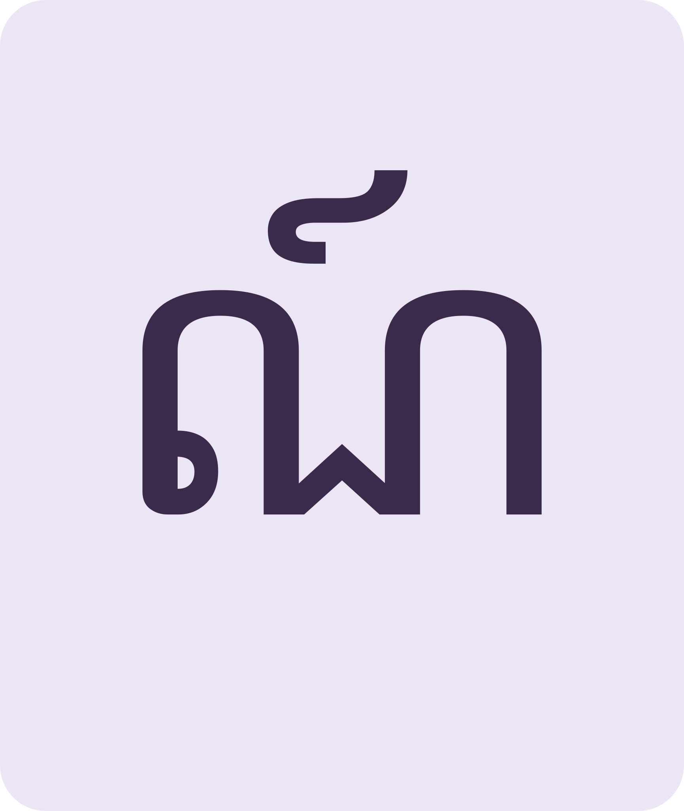
«-ណ៍» សំឡេង «-ឺ»ណ៍ sounds like a soft -ə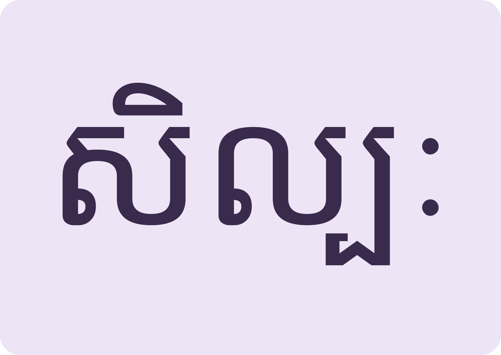
«ៈ» បន្ថែម «អ់»ៈ adds a short final -a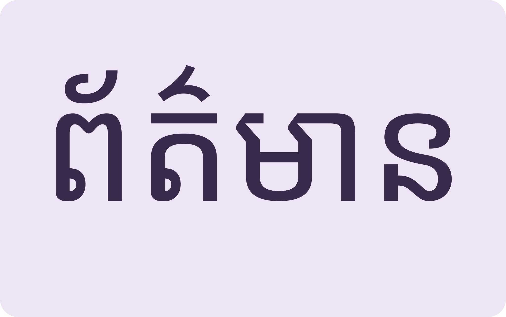
ពាក្យព័ត៌មានពេញទីNews and signs use them everywhereThe tooth closes big words, the dot steps through Pali endings, then keep the village safe.
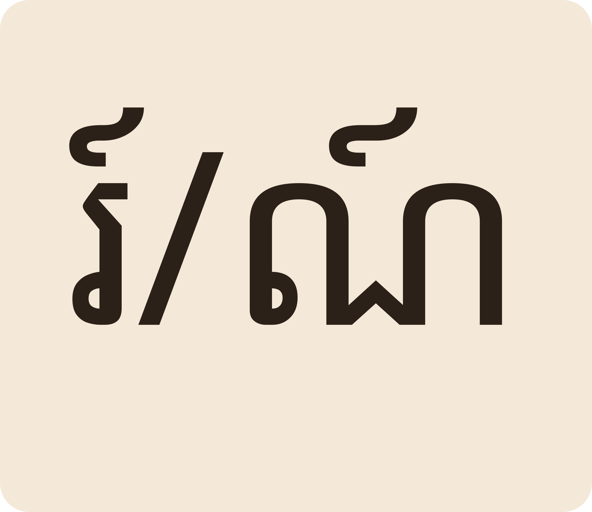
Space listen · ← → move · K show text
«រ៍» និង «ណ៍» នៅពីក្រោមព្យញ្ជនៈចុងពាក្យ អានសំឡេង «-ឺ» ស្រាល។
The tooth marks រ៍ / ណ៍ sit under a final letter and add a soft -ə.
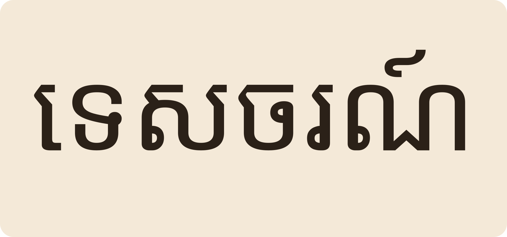
«ទេសចរណ៍» tourism។ ប្រាសាទអង្គរវត្តជាតំបន់ទេសចរណ៍វប្បធម៌។
ទេសចរណ៍ “tourism”. Angkor Wat is a cultural tourism zone.
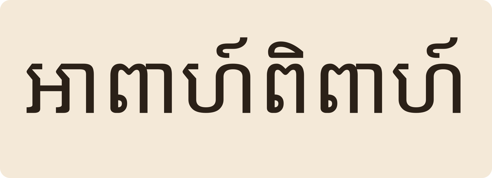
«អាពាហ៍ពិពាហ៍» marriage។ ជនជាតិខ្មែរមានប្រពៃណីរៀបអាពាហ៍ពិពាហ៍ដល់កូន។
អាពាហ៍ពិពាហ៍ “marriage”. Khmer people hold traditional weddings for their children.
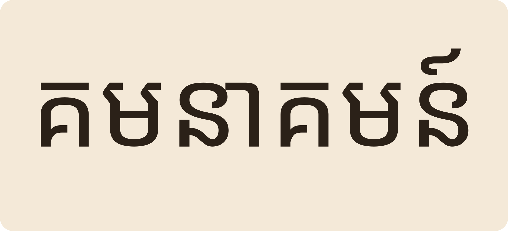
«គមនាគមន៍» transport/communication។ ផ្លូវល្អជួយសេដ្ឋកិច្ចសហគមន៍រីកចម្រើន។
គមនាគមន៍ “transport & communication”. Good roads grow the community economy.
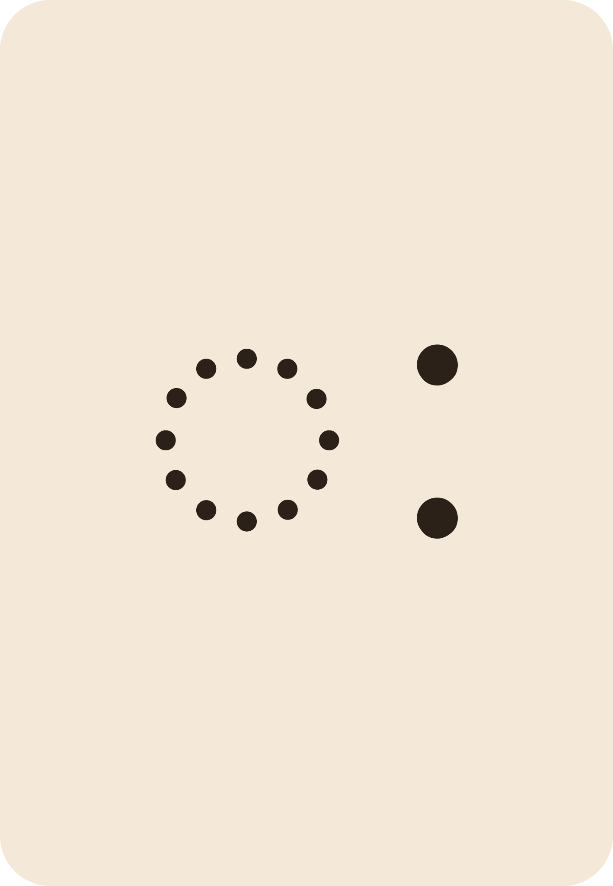
«ៈ» ដាក់ពីក្រោម បញ្ចូលសំឡេង «អ់» ខ្លី។
The foot-dot ៈ goes below the letter and adds a short final -a.
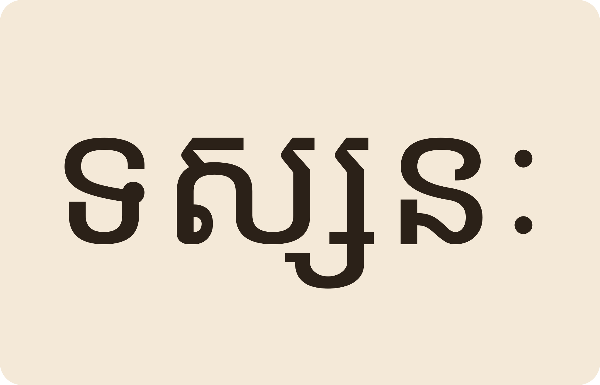
«ទស្សនៈ» view/opinion «សិល្បៈ» art «សត្វពាហនៈ» draft animal។
ទស្សនៈ viewpoint, សិល្បៈ art, សត្វពាហនៈ a working animal.
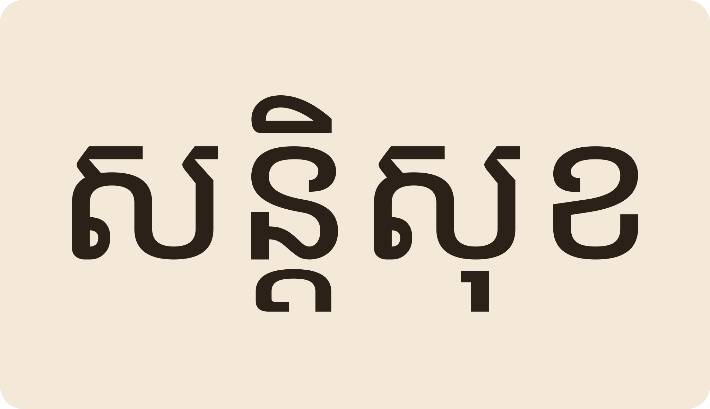
«បងបារម្ភពីសុវត្ថិភាពសន្តិសុខក្នុងសហគមន៍យើង»។
“Brother worries about the safety and security of our community.”
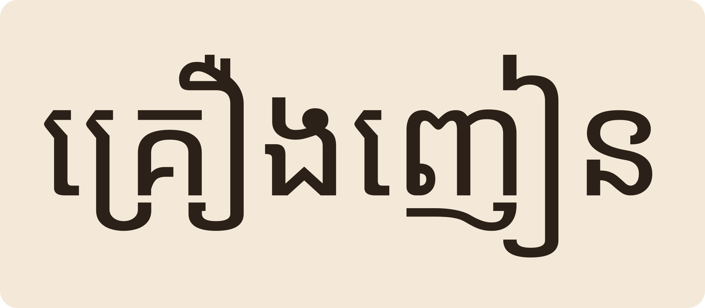
«យើងទាំងអស់គ្នាត្រូវរួមគ្នាបដិសេធគ្រឿងញៀន»។ មានបញ្ហារាយការណ៍ទៅអាជ្ញាធរជាបន្ទាន់។
“Together we must say no to drugs.” Report problems to the authorities at once.
មានសំឡេង «-ឺ» ស្រាល។ «ទេសចរណ៍» teah-chɔɔ-nə។
A soft -ə sounds out: “teah-chɔɔnɤ”.
ខុស។ «ះ» (រេហ៍ពួង) សំឡេង «-áh» នៅពីលើ «ៈ» (យុគ្គលៈពិន្ទុ) សំឡេង «-ăk» ខ្លីនៅពីក្រោម។
Different: ះ is an open -ah on top; ៈ is a clipped -ak below.
ចិត្តដែលមានសេចក្តីនឹក ដូចជា «ចាប់អារម្មណ៍» to be interested។
Feeling/mind: ចាប់អារម្មណ៍ = to take an interest.
«ប្រយោជន៍» benefit។ «ផលប្រយោជន៍» ផល + ប្រយោជន៍ សំឡេងជាផ្លូវការជាង។
Both mean benefit; ផលប្រយោជន៍ (fruit + benefit) is the formal form.
ការបៀតបៀន ធ្វើទុក្ខគ្នា។ «អំពើហិង្សាក្នុងគ្រួសារ» domestic violence។
Violence — harming others. អំពើហិង្សាក្នុងគ្រួសារ is domestic violence.
Tap a word's play button to hear it. Hide one side, then recall it before you tap to check.
«រ៍» និង «ណ៍» នៅពីក្រោមព្យញ្ជនៈចុងពាក្យ អានសំឡេង «-ឺ» ស្រាល។ «ទេសចរណ៍» tourism។ ប្រាសាទអង្គរវត្តជាតំបន់ទេសចរណ៍វប្បធម៌។ «អាពាហ៍ពិពាហ៍» marriage។ ជនជាតិខ្មែរមានប្រពៃណីរៀបអាពាហ៍ពិពាហ៍ដល់កូន។ «គមនាគមន៍» transport/communication។ ផ្លូវល្អជួយសេដ្ឋកិច្ចសហគមន៍រីកចម្រើន។
The tooth marks រ៍ / ណ៍ sit under a final letter and add a soft -ə. ទេសចរណ៍ “tourism”. Angkor Wat is a cultural tourism zone. អាពាហ៍ពិពាហ៍ “marriage”. Khmer people hold traditional weddings for their children. គមនាគមន៍ “transport & communication”. Good roads grow the community economy.
«ៈ» ដាក់ពីក្រោម បញ្ចូលសំឡេង «អ់» ខ្លី។ «ទស្សនៈ» view/opinion «សិល្បៈ» art «សត្វពាហនៈ» draft animal។
The foot-dot ៈ goes below the letter and adds a short final -a. ទស្សនៈ viewpoint, សិល្បៈ art, សត្វពាហនៈ a working animal.
«បងបារម្ភពីសុវត្ថិភាពសន្តិសុខក្នុងសហគមន៍យើង»។ «យើងទាំងអស់គ្នាត្រូវរួមគ្នាបដិសេធគ្រឿងញៀន»។ មានបញ្ហារាយការណ៍ទៅអាជ្ញាធរជាបន្ទាន់។
“Brother worries about the safety and security of our community.” “Together we must say no to drugs.” Report problems to the authorities at once.
Q. «ទេសចរណ៍» អាន «-ណ» ស្ងាត់ឬ «-ណឺ»?
Q. Is the final ណ៍ silent or sounded?
A. មានសំឡេង «-ឺ» ស្រាល។ «ទេសចរណ៍» teah-chɔɔ-nə។
A. A soft -ə sounds out: “teah-chɔɔnɤ”.
Q. «ៈ» និង «ះ» ដូចគ្នាទេ?
Q. Are ៈ and ះ the same?
A. ខុស។ «ះ» (រេហ៍ពួង) សំឡេង «-áh» នៅពីលើ «ៈ» (យុគ្គលៈពិន្ទុ) សំឡេង «-ăk» ខ្លីនៅពីក្រោម។
A. Different: ះ is an open -ah on top; ៈ is a clipped -ak below.
Q. «អារម្មណ៍» ន័យអ្វី?
Q. What does អារម្មណ៍ mean?
A. ចិត្តដែលមានសេចក្តីនឹក ដូចជា «ចាប់អារម្មណ៍» to be interested។
A. Feeling/mind: ចាប់អារម្មណ៍ = to take an interest.
Q. «ប្រយោជន៍» និង «ផលប្រយោជន៍» ខុសគ្នាទេ?
Q. Difference between ប្រយោជន៍ and ផលប្រយោជន៍?
A. «ប្រយោជន៍» benefit។ «ផលប្រយោជន៍» ផល + ប្រយោជន៍ សំឡេងជាផ្លូវការជាង។
A. Both mean benefit; ផលប្រយោជន៍ (fruit + benefit) is the formal form.
Q. «ហិង្សា» ជាអ្វី?
Q. What is ហិង្សា?
A. ការបៀតបៀន ធ្វើទុក្ខគ្នា។ «អំពើហិង្សាក្នុងគ្រួសារ» domestic violence។
A. Violence — harming others. អំពើហិង្សាក្នុងគ្រួសារ is domestic violence.
ជួយផង! មានរឿងមិនល្អ។
Help! Something bad is happening.
ខ្ញុំចង់រាយការណ៍ទៅអាជ្ញាធរ។
I want to report this to the authorities.
Say it in your head first, then tap the box to check.